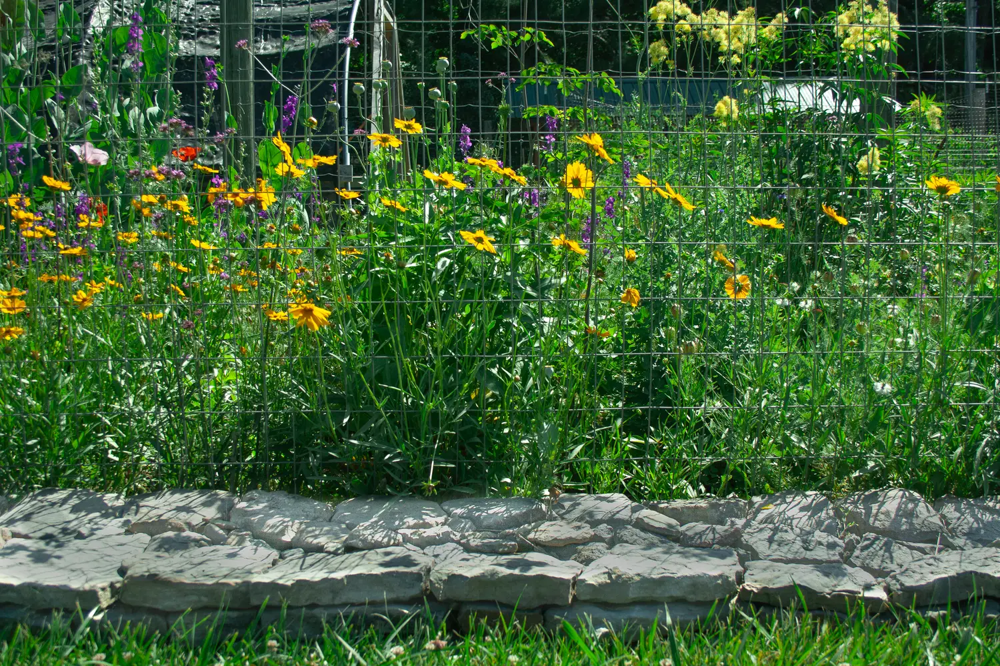

Past Experience
Landscape Installations
For years, Matthew built landscapes from the ground up — native plants, healthy soil, and careful craftsmanship. He's since stepped back from full-scale installation, but this is the hands-on work behind the practical design advice he offers homeowners today.

Hardscaping
Walks, paths, and patios bring structure to a landscape. Matthew handled the basics in-house and brought in specialist contractors for larger stonework — so every project got the right hands for the job.
Bed Preparation
Good plantings start below the surface. Beds were prepared by removing old vegetation, tilling and amending the soil with organic matter to improve drainage and root growth, then planting the right plants and finishing with the right mulch.

Planting & Finishing
Shrubs, trees, groundcovers, and perennials — chosen to suit the site and arranged to grow into a landscape that looks natural and ages gracefully, rather than one that fights its surroundings.
How the work was done
As a licensed North Carolina landscape contractor, Matthew ran a small, skilled crew and specialized in careful pruning, plant selection, and soil health. Lighting, irrigation, and arborist tree work were handled by licensed, insured contractors he'd worked with many times and trusted — the same network he still happily points homeowners toward today.
Licensed NC Landscape Contractor #CL1446